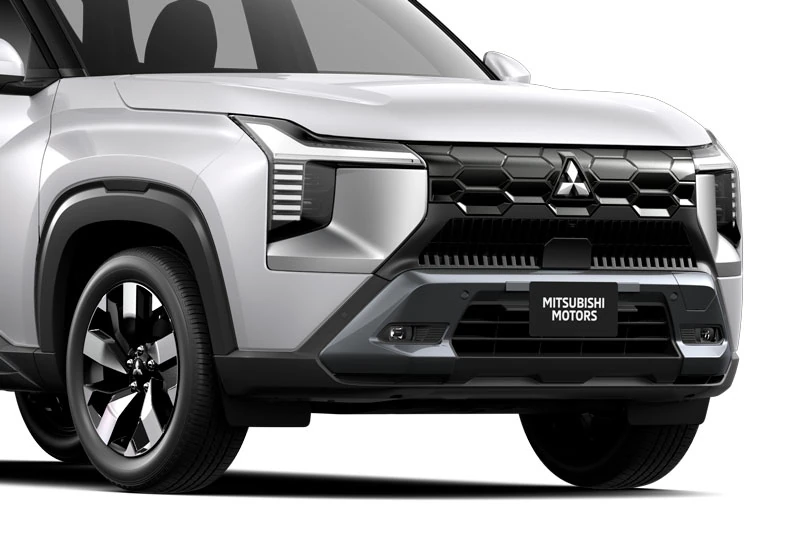
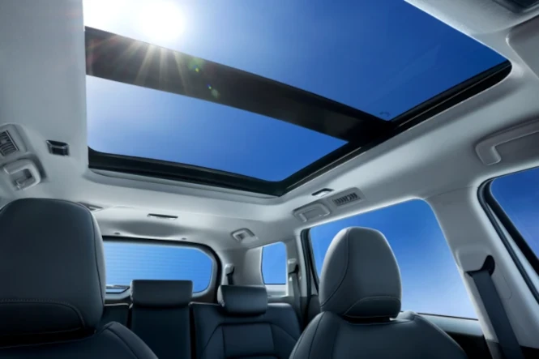
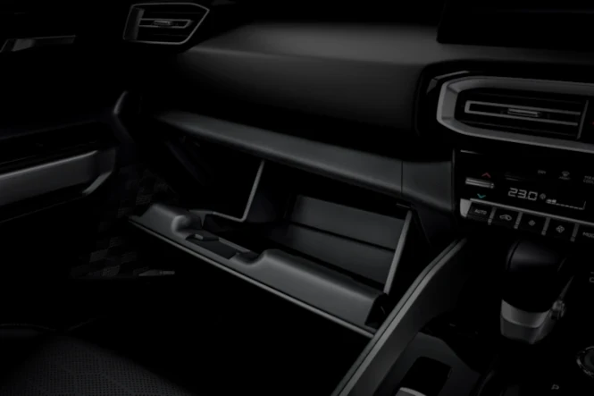
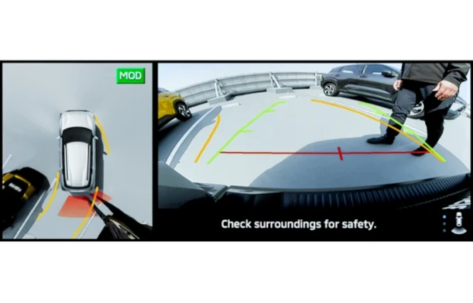
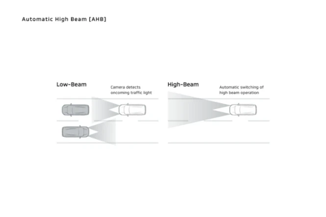
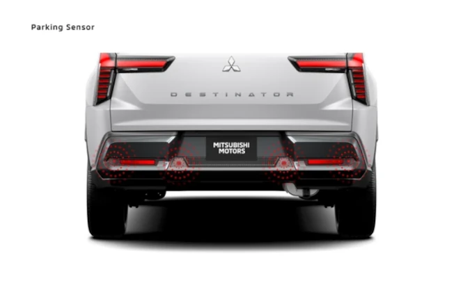

Mitsubishi All-New Destinator hadir sebagai medium SUV modern yang menggabungkan desain tangguh, teknologi canggih, dan kenyamanan premium. Namun, pengalaman berkendara bisa semakin maksimal dengan aksesori resmi yang dirancang khusus untuk mobil tersebut
| Type Mobil | Harga |
|---|---|
| Ultimate 4x2 AT |
|
| Exceed 4x2 AT |
|
| GLS 4X2 AT |
|
Mitsubishi All-New Destinator hadir sebagai SUV 7 penumpang dengan mesin 1.5L turbo bertenaga 163 PS, efisien, dan nyaman untuk semua medan.
All-New Destinator hadir dengan desain tangguh, 5 mode berkendara, fitur keselamatan Diamond Sense, dan konektivitas Mitsubishi Connect untuk pengalaman berkendara aman dan nyaman.
ULTIMATE - The Premium Choice Nikmati kenyamanan dan kemewahan tertinggi dengan fitur lengkap, desain elegan, dan teknologi canggih khas Mitsubishi.
EXCEED - The Perfect Balance Kombinasi sempurna antara performa tangguh dan kenyamanan modern. Cocok untuk Anda yang aktif dan dinamis.
GLS - The Smart Adventure Varian efisien dengan performa handal dan desain modern, siap menemani setiap perjalanan keluarga Anda.
The Confidence Booster for Every Destinations
Desain dynamic shield khas kendaraan Mitsubishi Motors yang dipadukan dengan akrilik transparan pada grille memberikan tampilan elegan dan kokoh.
Desain lampu depan berbentuk T mempertegas tampilan elegan kendaraan.
Lampu bagian belakang kendaraan memberi kesan estetika kuat pada mobil.
Melambangkan kekuatan dan ketangguhan, memadukan kesan mewah khas SUV dan meningkatkan aerodinamis kendaraan
Premium Comfort for All Destinations*
Desain dasbor berwarna hitam elegan dilengkapi dengan ambient lights dengan 64 pilihan warna, menciptakan pengalaman berkendara yang lebih mewah dan menyenangkan, baik di siang hari maupun malam.
*Ambient lights hanya tersedia di varian Ultimate
Layar sentuh berukuran 12.3 inci memungkinkan koneksi mudah ke smartphone Anda, menghadirkan akses cepat ke navigasi, hiburan, dan komunikasi dengan praktis dan nyaman.
*Hanya tersedia di varian Ultimate
Atap kaca panoramic sunroof menghadirkan cahaya alami dan pandangan luas ke lanskap kota maupun alam, menciptakan kabin yang terasa lapang dan mewah.
*Hanya tersedia di varian Ultimate
Desain konsol tengah yang ergonomis dilengkapi dengan cup holder dan penyimpanan praktis untuk mendukung kenyamanan Anda selama berkendara.
Kompartemen di bagian pintu memberikan ruang ekstra untuk botol, gadget, atau barang kecil lainnya, menjaga kabin tetap rapi.
Penumpang dapat menyimpan lebih banyak barang berukuran kecil hingga sedang sesuai dengan kebutuhan.
Kompartemen ini membantu pengguna untuk menyimpan barang secara terorganisir dan lebih mudah untuk dijangkau.
Memberikan kepraktisan dan kenyamanan, penumpang dapat menaruh minuman serta menyandarkan tangan di baris kedua kabin.
Bagasi bagian belakang yang luas dapat menyimpan lebih banyak barang, dilengkapi 3 sekat di lantai bagasi untuk membantu barang tetap pada tempatnya di segala medan jalan
Dirancang untuk menyimpan barang kecil hingga besar, kompartemen ini dapat menampung kebutuhan barang-barang penumpang sekaligus menjaga kabin terorganisir.
Tersedia meja yang dapat dilipat untuk menunjang aktivitas penumpang baris kedua selama perjalanan. *Tidak tersedia di varian GLS
Tersedia slot tipis di bagian belakang kursi untuk menyimpan smartphone atau perangkat tipis lainnya sehingga mudah dijangkau.
Layar digital ini memberikan informasi real-time dengan tampilan modern yang mudah dibaca. Pengemudi dapat membaca kecepatan, bahan bakar, dan mode berkendara, membuat perjalanan semakin aman.
Dengan fitur speed compensated volume & equalizer, pelanggan dapat mendengarkan panggilan atau musik ke seluruh kabin dengan nyaman di berbagai kecepatan dan kondisi jalan. *Opsi premium hanya tersedia untuk varian Ultimate
Charging port yang berada di baris pertama memberikan kemudahan pengisian daya tanpa harus menjangkau area lain kabin.
Fitur ini menghadirkan fleksibilitas optimal melalui pengaturan suhu terpisah bagi pengemudi dan penumpang depan. Setiap perjalanan pun terasa lebih nyaman dengan kenyamanan yang disesuaikan secara personal.
*Tidak tersedia di varian GLS
Kemudi dengan desain 3-spoke dilengkapi fitur dan telescopic, membantu pengemudi untuk mengatur posisi setir sesuai kenyamanan genggaman.
Baris ketiga dilengkapi kompartemen tipis khusus untuk meletakkan perangkat pribadi secara praktis dan mudah dijangkau.
Berada di baris ketiga dengan desain minimalis, dual port USB ini memberikan kemudahan pengisian daya tanpa mengorbankan estetika maupun kenyamanan.
*Tidak tersedia di varian GLS
Dirancang untuk menjaga kestabilan tempat minum, ruang penyimpanan ini mendukung fleksibilitas dan kenyamanan untuk penumpang di baris ketiga.
FCM memberi peringatan audio dan visual jika mendeteksi risiko tabrakan di depan mobil, serta secara otomatis mengaktifkan rem untuk menghindari atau mengurangi dampak tabrakan.
Saat kendaraan berhenti, terutama di lampu lalu lintas, fitur ini akan memberitahu pengemudi melalui Digital Driver Display untuk melanjutkan perjalanan ketika kendaraan depan mulai bergerak.
Saat mundur, jika sensor radar belakang mendeteksi objek bergerak, sistem akan memperingatkan melalui peringatan visual, suara, dan kaca spion. Fitur ini membantu meningkatkan keselamatan dan mencegah potensi tabrakan.
Multi around monitor menampilkan pandangan 360 derajat di sekeliling kendaraan, membantu pengemudi saat parkir dan bermanuver dengan lebih aman dan presisi.
Adaptive Cruise Control memungkinkan pengemudi untuk mengatur kecepatan mobil dan menjaga jarak aman dengan kendaraan di depan secara otomatis.
Untuk meningkatkan keselamatan dan kenyamanan berkendara di malam hari, lampu high beam berubah otomatis menjadi low beam saat mendeteksi kendaraan lain di depan.
Ketika terdeteksi kendaraan lain di area blind spot, BSW memberikan peringatan kepada pengemudi melalui Digital Driver Display dan menampilkan peringatan berkedip pada kaca spion kanan maupun kiri sesuai dengan area yang terdeteksi.
Wiper di bagian depan akan aktif secara otomatis ketika hujan, membuat visibilitas optimal tanpa intervensi untuk pengemudi.
Fitur Keselamatan menjaga Anda tetap aman di jalan. Tetap terhubung dengan layanan bantuan dari Mitsubishi Motors dalam situasi darurat.
Jaga mobil tetap aman dari jarak jauh. Fitur keamanan pintar memungkinkan Anda mengontrol dan memantau kendaraan kapan pun dibutuhkan.
Temukan kemudahan maksimal saat berkendara dengan kontrol penuh langsung dari genggaman. Pengalaman berkendara menjadi lebih praktis dan menyenangkan.
Mesin 1.5 L dengan performa turbo memberikan sensasi berkendara yang dinamis dengan menghadirkan perpaduan sempurna antara performa tangguh dan efisiensi bahan bakar.

Berkendara dengan lebih aman dan nyaman dengan 5 mode mengemudi. Mode terbaru “Tarmac” mendukung akselerasi lebih cepat untuk mendahului mobil di depannya ketika dibutuhkan khususnya di jalan tol maupun perbukitan. *Tidak tersedia di varian GLS
Dengan 6 SRS airbags, pengguna mendapatkan perlindungan keselamatan optimal selama berkendara. *Hanya tersedia di varian Ultimate
Setelan suspensi Mitsubishi Destinator didesain secara khusus untuk menyesuaikan dengan ban, roda, dan bodi yang besar, memastikan stabilitas kendaraan yang tinggi dan kenyamanan berkendara dari jalan mulus perkotaan hingga jalan bergelombang perbukitan Indonesia.
Electric Parking Brake dengan Auto Hold menambahkan sentuhan yang canggih pada kendaraan dan memberikan pengalaman berkendara yang lebih nyaman.
Membantu pengemudi untuk manuver saat posisi berkendara mundur, fitur ini menghadirkan sensor suara ketika jarak mobil terlalu dekat dengan objek di sekitarnya, menghindari risiko benturan.
Radius putar kecil 5.4 meter memudahkan pengemudi untuk manuver dan berbelok dengan lebih mudah dan mulus terutama di perkotaan atau jalan yang sempit.
Halo! Ada yang bisa kami bantu?
Chat Sekarang